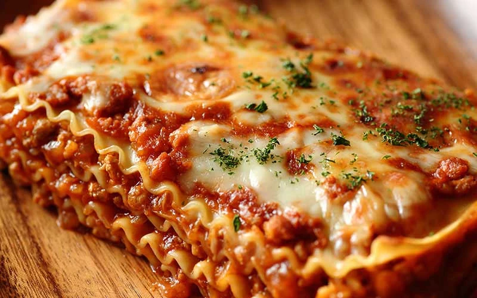

Lasagne

This comfort food comes all the way from Italy.
It favorites layers of robust tomato sauce, ground beef and a mozzarella-ricotta cheese mixture between sheets of pasta.
This baked dish is perfect for everything from busy weeknight dinners to parties and entertaining.
Ingredients
- 1 package Anna Traditional Lasagne (1 lb)
- 1 lb Ground Beef;
- jar Cento All Purpose Pasta Sauce (26 oz)
- 1 cup Water
- 1 Egg, beaten
- 1 lb Ricotta Cheese
- 8 oz Mozzarella Cheese, grated
- 3/4 cup Parmesan Cheese, grated
- 1 tbsp Cento Parsley
- Cento Fine Sicilian Sea Salt, to taste
- Cento Ground Black Pepper, to taste
Steps
- Preheat oven to 375˚F.
- Prepare lasagne according to directions on package; drain and set aside.
- In a saucepan, brown ground beef; drain fat. Add pasta sauce and water, bring to a boil.
- In a large bowl, blend egg, ricotta, mozzarella, 1/4 cup parmesan and parsley.
- Add salt and pepper to taste. Spread a layer of 1/4 sauce mixture in the bottom of a 13 inch x 9 inch x 2 inch pan.
- Arrange noodles lengthwise side by side, overlapping slightly to cover the sauce.
- Layer 1/2 cheese mixture, then 1/4 sauce mixture, top with noodles and repeat.
- Cover with the remaining sauce mixture and remaining 1/2 cup parmesan cheese.
- Cover with aluminum foil and bake for 45 minutes. Let stand for 5-10 minutes before serving.
- Serves 6-8